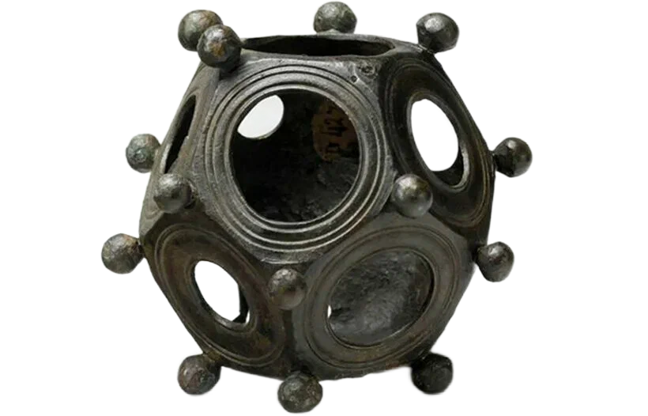

Древние истоки
Додекаэдр был известен ещё пифагорейцам (VI век до н. э.) и считался символом вселенной. Платон в диалоге «Тимей» связывал додекаэдр с "космосом", предполагая, что это форма Вселенной.
В руках мастеров и учёных
Архимед, Евклид и другие древнегреческие математики изучали свойства додекаэдра и включали его в свои труды. В эпоху Возрождения художники и учёные, такие как Леонардо да Винчи и Кеплер, были очарованы его симметрией.
Современное значение
Сегодня додекаэдр нашёл применение в различных областях: от кристаллографии до молекулярной биологии. Некоторые вирусы имеют додекаэдрическую форму. В популярной культуре додекаэдр известен как 12-гранный игральный кубик (D12) в настольных играх.

Классическое изображение додекаэдра